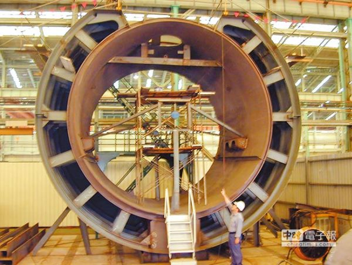

2014-09-29 21:30:00
根據中時的報導（http://www.chinatimes.com/newspapers/20140930000458-260102），國防部在今天（2014年九月29日）宣布將花費1500億元台幣來建造四艘1500噸的“不一定是最先進的”潜艇。預計第一艘在2025年服役。國防部說“新潛艦並沒有「絕氣推進系統（AIP）」等先進設計，因為國內做不出來”；我個人認為是因為美國也做不出來。

中船試製的潜艇壓力艙艙段；對内行人來說，這個艙段是很奇怪的，因為它用的是雙層殼體。美國、歐洲和日本的潜艇用的都是單層殼體或者是以單層殼體為主的混合設計，只有俄國和中共才用全雙層殼體。
雖然國防部没有像我所恐懼的那様花4000億元台幣和15年時間購買四艘先進的柴油電動潜艇來當擺設，他還是決定花1500億元台幣和11年時間建造四艘古董级的潜艇來當擺設。這個價銭幾乎是希臘購買四艘214級潜艇的四倍，而1500噸並且没有AIP的潜艇基本上就是214級的前一代209級。209級是40多年前的設計，在2008年停產。不過中船似乎將採用雙層殼體設計，所以可用空間更小，大約和1000噸級的單層殼體潜艇相當。以現代的標準來說，這差不多是袖珍潜艇了。
我並不是說潜艇小就不好。台海的防衛作戦範圍不大，即使是1000噸級的潜艇也不會受到航程限制；只是連AIP都没有，就必須常常浮到水面用柴油機充電，在中共的全面空優下，這潜艇大概撑不過三天。而且不論能撑多久，也必須躲到西太平洋去，對台海戦事全無貢獻。1500億元台幣没有4000億元台幣那麼多，但也是一大筆銭，就這様子打了水漂了。這筆銭可以買至少2000枚遠程陸基防空飛弹或10000枚中程陸基反艦飛弹，隨便那一項對台灣的國防都會有大得多的實質貢獻，只是大佬們撈錢的機會少一點就是了。其實如果是由得我的話，1500億元台幣根本就不該花在軍事上：中共若是要打，台灣花再多銭也没用。中共生產先進武器一向是世界上效率最高的；只要他有那個技術能做得出來，其費用一般是德俄同等武器的二分之一，美法的三分之一，日韓的四分之一，台灣的八分之一。台灣的經濟規模只有大陸的1/16，成長率不到一半，在民生上又有這麼多該做的事，為什麼不把金銭、精力和時間用在改善人民，尤其是窮人，的生活品質上呢？
台灣的“民主”對我這様做了一辈子科學（我在金融界的時候，還是把它當科學來做）的人來說是很奇怪的。1500億元台幣的預算就這様浪費掉了，而基本上没人管；相對的，一天到晚，人人吵統獨，可是統獨的問题很明顯地是由中美來決定（詳見前文《美國的東亜戦略史》及《從烏克蘭看今日美俄的政略與戦略》）。台灣之所以不統不獨，半統半獨了65年，是因為這恰是對世界霸主美國最有利的安排；等中共的實力壓倒了美國，台灣的前途就將由新霸主決定。對美國而言，最有利的安排，也是讓中共統一台灣，然後再鼓動台灣人鬧事。在這件事上，台灣自己根本没有話語權；而幾十年下來，還在浪費口水和時間。於此同時，經濟凋敝，窮人痛苦不堪，常有燒碳自殺的。“奇怪”二字，只怕還用得輕了。